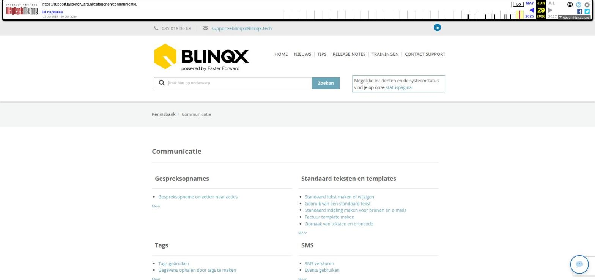

Dossier

Tekstinhoud
Dossier
Mogelijkheden dossier
Dossier aanmaken
Lees hier hoe je een nieuw dossier aanmaakt.
Dossiergegevens exporteren of samenvoegen
Lees hier hoe je gegevens vanuit het ene dossier kan overzetten naar een ander nieuw of bestaand dossier.
Dossier verwijderen
Lees hier hoe je een klantdossier of leveranciersdossier kunt verwijderen.
Verhuizing aanmaken in dossier
Lees hier hoe je een verhuizing in een klantdossier kunt aanmaken.
Toevoegen van een persoon/organisatie en wijzigen gegevens
Hier kan je vinden waar je een persoon toevoegt en wijzigt in het dossier.
Producten dossier
Serviceabonnement voor onderhoud aanmaken
Lees hier hoe je een abonnement in het klantdossier aanmaakt.
Advies/dienst aanmaken in klantdossier
Lees hier hoe je een dienst aanmaakt in een klantdossier.
Product of offerte archiveren
Hier lees je hoe je een product kunt archiveren en dearchiveren.
Status van een product aanpassen
Hier lees je hoe je een status van een product handmatig of automatisch via de workflow aanpast.
Hypotheek staat ongewenst op vervallen/ is gearchiveerd
Lees hier wat je moet doen als de hypotheek ongewenst gearchiveerd is en de status op vervallen staat.
Registraties
Registratie aanmaken
Lees hier hoe je een registratie kunt aanmaken.
Dossiernotitie aanmaken en wijzigen
Lees hier meer over het aanmaken, wijzigen en verwijderen van de dossiernotitie.
Urgente registratie
Lees hier meer over het aanmaken, lezen, wijzigen en verwijderen van een urgente registratie.
Automatisch tijd registreren
Lees hier meer het automatisch of handmatig laten starten van een timer in een dossier.
Uren registreren in een dossier
Leer hoe je vastlegt hoeveel tijd er is besteed aan werkzaamheden.
Documenten
Pdf bestand bewerken
In dit artikel vind je waar je het PDF kunt bewerken en welke mogelijkheden hierin zijn.
PDF documenten splitsen en samenvoegen vanuit een dossier
Lees hier hoe je PDF documenten vanuit een dossier kunt splitsen of samenvoegen.
Document uploaden en verwijderen in een dossier
Leer wat de verschillende manieren zijn om één of meerdere documenten aan een dossier toe te voegen.
Documenten ordenen met mappenstructuur
In dit artikel lees je meer over de verschillende type mappen in een dossier en hoe je deze kunt toevoegen.
Soort document toevoegen
Leer hoe je soorten documenten toevoegt, aanpast en hoe deze worden getoond in de mijn omgeving van de klant.
Stukkenlijst
Stukkenlijst gebruiken
Leer hoe je een lijst met aan te leveren stukken aanmaakt, bewerkt en beheert.
Stukkenlijst aanmaken
Leer hoe je een lijst met aan te leveren documenten voor een hypotheek aanmaakt. Dit kan handmatig of automatisch.
Stukken naar de maatschappij versturen
Lees hier hoe je documenten voor een hypotheekaanvraag naar de maatschappij verzendt.
Standaard stukkenlijst maken of wijzigen
Leer hoe je een standaard stukkenlijst aanmaakt of wijzigt, zodat je direct de juiste stukken plaatst.
Pdf bestand bewerken
In dit artikel vind je waar je het PDF kunt bewerken en welke mogelijkheden hierin zijn.
Workflow
De mogelijkheden van workflows
In dit artikel krijg je informatie over workflow in eBlinqx, zoals de melding 'geen verdere transities mogelijk'.
Workflow onder een offerte, factuur en taak
Lees hier hoe workflows onder offertes, facturen en taken werken.
Hypotheek staat ongewenst op vervallen/ is gearchiveerd
Lees hier wat je moet doen als de hypotheek ongewenst gearchiveerd is en de status op vervallen staat.
Workflow te ver doorlopen
In dit artikel lees je wat je kunt doen als de workflow te ver doorlopen is of er een verkeerde keuze is gemaakt.
Gemiddelde doorlooptijden instellen
Hier lees je hoe je gemiddelde doorlooptijden per geldverstrekker kan instellen en hoe de workflow hierop reageert.